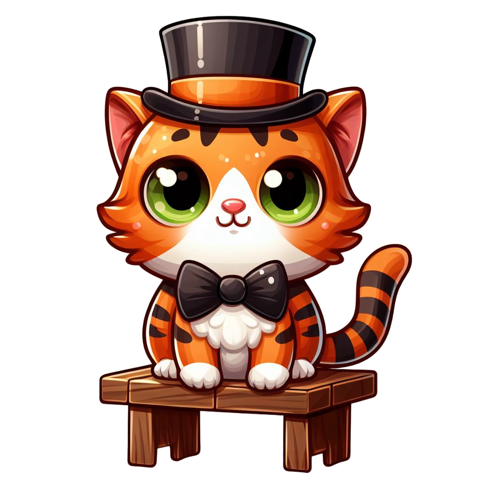

Bienvenue sur OnlyCat, la plateforme dédiée à l'amour des chats et à la communauté des propriétaires de ces adorables compagnons à quatre pattes. Notre Mission Chez OnlyCat, notre mission est de célébrer la beauté, la singularité et la personnalité unique de chaque chat. Nous avons créé cet espace pour offrir aux amoureux des félins une plateforme où ils peuvent partager, se connecter et soutenir ceux qui partagent cette passion commune.
Notre Inspiration La création de OnlyCat découle de notre profond amour pour les chats et de notre désir de créer une communauté bienveillante et engageante pour les propriétaires de ces merveilleuses créatures. Chaque ronronnement, chaque facétie, et chaque moment de câlin avec nos compagnons félines nous inspirent chaque jour. Engagés pour le Bien-être des Chats Nous nous engageons à promouvoir le bien-être des chats. En plus de partager des photos et des vidéos adorables, nous encourageons les échanges constructifs, partageons des conseils vétérinaires et offrons la possibilité de soutenir financièrement les propriétaires de chats pour leur bien-être, qu'il s'agisse de soins, de jouets ou de friandises.
 Une Communauté Chaleureuse OnlyCat est bien plus qu'une simple plateforme en ligne. C'est un lieu où les amoureux des chats peuvent se rassembler, échanger des expériences, partager des anecdotes et créer des liens avec d'autres passionnés. Nous valorisons la bienveillance, l'échange positif et le respect au sein de notre communauté. L'Équipe OnlyCat Notre équipe est composée de 3 étudiant du BUT informatique de Nevers, nous sommes également des passionnés des chats qui ont travaillé avec dévouement pour créer cette plateforme. Nous sommes fiers de partager notre passion avec vous et nous sommes impatients de vous accueillir dans notre communauté. Rejoignez-nous chez OnlyCat et plongez dans un monde rempli de ronronnements, de jeux félins et de partage d'amour pour nos boules de poils préférées !